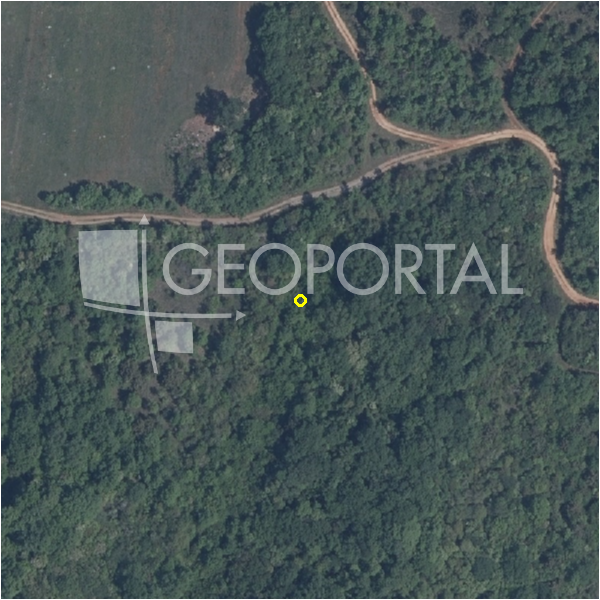

#63825 · ISTRA, BALE – tri kamene kuće na građevnom zemljištu od 7.800 m²
Bale, Bale, Istarska · kuca · njuskalo · status active · oglas ↗
Ocjena
- Score
- 56 rule 56 · LLM – · 13.09.2026.
- RLV
- 1,03 M€ (132 €/m²) · ratio 1,59
- Ukupna investicija
- 15,08 M€
- GBP
- 5.616 m²
- Feedback
- –
- CRM
- –
Sažetak: Prodaju se tri kamene kuće (ukupno oko 223 m²) na parceli od 7.800 m² u blizini Bala u Istri, s pristupom asfaltiranom cestom i priključcima struje, vode i telefona. Ključan rizik je što su sve kuće za potpunu adaptaciju, a udaljenost do mora je znatna (oko 12 km).
Oglas
- Cijena
- 645.000 € (83 €/m²)
- Površina
- 7.800 m²
- Prodavatelj
- agencija · DUX Nekretnine
- Prvi put
- 11.09.2026. · zadnje 11.09.2026. · 2 d na tržištu
- Duplikati
- kod 2 agencija: njuskalo 648.000 €
Povijest cijene
| Datum | Cijena |
|---|---|
| 11.09.2026. | 645.000 € |
Flagovi
natura_uz_gradnju Natura/zaštićeno područje uz građevinsku zonu — posebni uvjeti (−5)sea_row_nepoznat obala: red uz more nepoznat (bez GIS-a / približan pin) — pretpostavljen 2. red (−10)
zone_uncertainty zona nije pregledana (reviewed: false) (−5)
zona_provjeriti zona iz geokodiranja — provjeriti (−5)
kuca_za_rusenje kuća za rušenje
parcelacija fazni projekt / parcelacija
zona_iz_oglasa zona preuzeta iz teksta oglasa (bez GIS-a)
duplikati isto zemljište kod više agencija
llm_pending LLM ekstrakcija/ocjena nedostupna
Komponente score-a
| rlv | {'gbp': 5616.0, 'kis': 0.8, 'nkp': 4212.0, 'noi': None, 'rlv': 1027482.2608695664, 'ratio': 1.5929957532861494, 'value': None, 'phases': 4, 'profile': 'obala_visestambeno', 'gdv_neto': 18532800.0, 'cost_soft': 1124538.0, 'gdv_bruto': 23166000.0, 'kis_known': False, 'total_inv': 15076716.0, 'cost_build': 11245380.0, 'cost_other': 2023098.0, 'cost_sales': 694980.0, 'demolition': True, 'gbp_source': 'kis', 'rlv_per_m2': 131.72849498327773, 'parcel_area': 7800.0, 'parcelation': True, 'roi_on_cost': 0.1831369643097343, 'profit_at_ask': 2761104.0, 'cost_demolition': 13380.0, 'total_inv_phase': 4281954.0, 'parcel_area_effective': 7020.0, 'sale_price_per_m2_nkp': 5500.0} |
| hard | [] |
| info | ['kuca_za_rusenje', 'parcelacija', 'zona_iz_oglasa', 'duplikati', 'llm_pending'] |
| rubric | {'permits': {'max': 5.0, 'detail': {'permit': 'none'}, 'points': 0.0}, 'location': {'max': 15.0, 'detail': {'source': 'rlv.yaml:istra_zapad/row2', 'sale_price_per_m2_nkp': 5500.0}, 'points': 11.5}, 'physical': {'max': 4.0, 'detail': {'slope_pct': 11.07, 'slope_points': 1.893}, 'points': 1.89}, 'liquidity': {'max': 3.0, 'detail': {'n_cuts': 0, 'points_cut': 0.0, 'points_days': 0.016666666666666666, 'seller_type': 'agencija', 'points_fresh': 0.5, 'price_cut_pct': None, 'days_on_market': 2, 'points_private': 0}, 'points': 0.52}, 'rlv_ratio': {'max': 25.0, 'detail': {'rlv': 1027482, 'ratio': 1.593, 'asking_price': 645000.0}, 'points': 25.0}, 'ticket_fit': {'max': 10.0, 'detail': {'asking_price': 645000.0}, 'points': 10.0}, 'zone_quality': {'max': 8.0, 'detail': {'source': 'oglas', 'zone_class': 'stambeno', 'zone_ideal': True}, 'points': 3.0}, 'profit_potential': {'max': 20.0, 'detail': {'roi_on_cost': 0.183, 'profit_at_ask': 2761104}, 'points': 20.0}, 'price_vs_benchmark': {'max': 10.0, 'detail': {'source': 'auto:Bale', 'deviation': 0.31, 'ask_eur_m2': 83, 'benchmark_eur_m2': 119.84}, 'points': 9.1}} |
| weights | {'llm': 0.4, 'rule': 0.6, 'model': 0.0} |
| penalties | {'zona_provjeriti': 5, 'sea_row_nepoznat': 10, 'zone_uncertainty': 5, 'natura_uz_gradnju': 5} |
| raw_score | 81,0 |
| rlv_notes | ['parcelacija: > 2500 m² → fazni projekt, −10 % površine, +5 % soft', 'sea_row nepoznat → pretpostavljen 2. red', 'fazni projekt: 4 faze; investicija prve faze 4,281,954 €'] |
| flag_notes | {'natura': True, 'phases': 4, 'max_gbp': 5616, 'total_inv': 15076716, 'zone_code': 'S', 'zone_note': 'provjeriti (geokodirano, zona = dominantna u 150 m)', 'dupl_count': 2, 'zone_class': 'stambeno', 'zone_known': True, 'zone_source': 'oglas', 'geo_precision': 'approx', 'sea_row_claim': 'none', 'zone_reviewed': None, 'dupl_price_max': 648000.0, 'dupl_price_min': 645000.0, 'protected_area': False, 'total_inv_phase': 4281954} |
| caps_applied | [] |
GIS
- Čestica
- –
- Zona
- – (–) · provjeriti (geokodirano, zona = dominantna u 150 m)
- kig / kis / katnost
- – / – / –
- GP / UPU
- – · UPU –
- Pristup / nagib
- unknown · 11,1 % (max 17,3 %)
- More
- –
- Zaštite
- Natura da · zaštićeno ne · kulturno dobro ne
- Zgrade na čestici
- 0 %
- Match
- –
Karta
Ortofoto (DOF)

RLV kalkulacija — pretpostavke
| gbp | {'value': 5616.0, 'source': 'kis'} |
| kis | {'value': 0.8, 'source': 'default_profila'} |
| sea_row | {'value': '2', 'source': 'pretpostavka'} |
| soft_pct | {'value': 0.1, 'source': 'profil+parcelacija'} |
| nkp_ratio | {'value': 0.75, 'source': 'profil'} |
| cost_other | {'value': 2023098.0, 'source': 'profil: doprinosi+uređenje po m² GBP, financiranje+rezerva % gradnje'} |
| parcel_area | {'value': 7800.0, 'source': 'oglas'} |
| asking_price | {'value': 645000.0, 'source': 'oglas'} |
| margin_on_cost | {'value': 0.15, 'source': 'profil'} |
| demolition_cost | {'value': 13380.0, 'source': 'profil × m²'} |
| existing_building_m2 | {'value': 223.0, 'source': 'oglas'} |
| build_cost_per_m2_gbp | {'value': 2000.0, 'source': 'profil'} |
| sale_price_per_m2_nkp | {'value': 5500.0, 'source': 'rlv.yaml:istra_zapad/row2'} |
| transfer_tax_and_acquisition | {'value': 0.06, 'source': 'profil'} |
Ekstrakcija iz oglasa
| permit | none |
| utilities | ['struja', 'voda', 'telekom'] |
| access_road | yes |
| floors_claim | P+1+Pk |
| sea_row_claim | none |
| slope_mention | ravna |
| building_on_parcel | ruin |
| existing_building_m2 | 223.0 |
| sea_distance_m_claim | 12000.0 |
Benchmarks mikrolokacije
| Vrsta | Vrijednost | n | Od | Izvor |
|---|---|---|---|---|
| land_ask_eur_m2 | 120 | 25 | 11.09.2026. | auto |
Opis oglasa
ISTRA, BALE – tri kamene kuće na prostranom imanju od 7.800 m² U prodaji su tri kamene kuće za potpunu adaptaciju, smještene na imanju površine 7.800 m², u mirnom istarskom mjestu nedaleko od Bala – jedne od najšarmantnijih općina zapadne Istre. Ovo jedinstveno imanje pruža savršenu priliku za obnovu i stvaranje ekskluzivnog kompleksa vila, autentičnog istarskog naselja ili luksuzne privatne rezidencije okružene netaknutom prirodom i potpunim mirom. Najveća kuća (dvojna) tlocrtne površine 88 m², prostire se kroz tri etaže – prizemlje, kat i potkrovlje. Uz nju su uredno evidentirane u dokumentaciji još dvije samostojeće građevine površine 38 m² i 97 m². Okućnica je prostrana, ravna i lako pristupačna, s mogućnošću pristupa s dvije strane, od kojih jedan vodi izravno s asfaltirane ceste. Svi priključci (struja, voda, telefon) dostupni su uz parcelu. Cijelo imanje nalazi se unutar građevinske zone stambene namjene, što omogućuje gradnju i adaptaciju postojećih objekata u skladu s važećim prostornim planom. Lokacija je iznimno atraktivna – Bale su udaljene svega 7 km, more 12 km, a Rovinj, jedno od najpoznatijih turističkih središta Istre, svega 15 minuta vožnje. Grad Pula udaljen je 29 km, Zračna luka Pula 23 km, dok je Rijeka na udaljenosti od 85 km. Idealna prilika za investitore koji prepoznaju vrijednost autentičnih istarskih nekretnina i traže projekt s karakterom, u mirnom i zelenom okruženju. Vlasništvo je čisto, dokumentacija uredna. Nekretnina vrijedna razgleda – tri kuće, veliko zemljište i neograničeni potencijal za stvaranje jedinstvenog istarskog imanja. Poštovani potencijalni kupci, Drago nam je što pokazujete interes za nekretnine iz naše ponude. Za više informacija i dogovor u vezi s razgledom nekretnine slobodno nas kontaktirajte – konzultacije na njemačkom jeziku također su moguće. Agencijska provizija naplaćuje se u skladu s Općim uvjetima poslovanja, dostupnima na našoj web stranici: www.dux-nekretnine.hr/opci-uvjeti-poslovanja ID KOD AGENCIJE: 43069 Denis Kaštelan Agent s licencom Mob: +385 91 950 4277 Tel: +385 91 480 8808 E-mail: denis@dux-nekretnine.hr www.dux-opatija.com